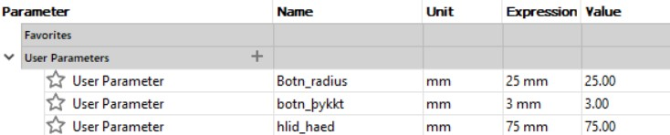

The project was two part, one was to design a object that could not be manufactured by subtraction and to 3d print this object. The material provided in the course is a maximum of 100g. As well as that I had to 3d scan an object of my choosing and document the process. Description of this part can be found her below. The second part is a group project and the goal was to test the limits of the 3d printer and make rules regarding its use, this part can be accessed here.
For this project I decided to use Fusion 360, Cura and experimented with Meshmixer. I have previous experience with Fusion as well as Inventor, Autocad and Solidworks. I decided to use Fusion because in project 1 in this course I used Fusion and that went great.
Fusion 360 is a cloud-based CAD/CAM tool for collaborative product development. Fusion 360 enables exploration and iteration on product ideas and collaboration within distributed product development team.
Cura is an open source slicing application for 3D printers. I chose this program because my brother recommended it. He has previous experience with 3d printing.
Meshmixer is a state-of-the-art software for working with triangle meshes. I used Meshmixer when i attempted to create an irregular pattern in my design. In the end I went another way but this program has many excellent features to create patterns.
Meshmixer
I started by looking at projects from students that have finished this course as well as looking up things to 3d print online. In the end I decided to design and manufacture a small pencil case for my favourite pens. I have a large one that is always stuffed and sometimes I can’t find my favourite pen quickly. This will hopefully encourage me to stop hoarding pens.
I looked for some ideas for the design online and decided to create a simple case with a pattern. I found the video Layer by Layer - How To Make Voronoi Patterns in Meshmixer that shows how to use Meshmixer to create patterns on an object. I thought the pattern looked very nice and decided to use Meshmixer.
Now that I had a design in mind I had choose the size of the pensil case. I chose the radius of the bottom, wall height and thickness. Later I changed these parameters because of how long this would take to print. The original parameters can be seen in the picture here below:
By drawing half of the vase and using the command Revolve I created the shape of the vase. The drawing can be seen here below:
And then after using Revolve:
The command Shell is used to hollow out the shape. I chose to have the wall thickness 3mm. To round out the edges of the pencil holder the command Fillet was used.
To create the pattern in Meshmixer I exported the pencil holder in stl format and opened the file in Meshmixer. I made a couple of different versions of the pencil holder with different patterns, but I was never happy with the result. One example can be seen here below:
So I decided to make the pattern in Fusion and not irregular. I drew the pattern on the front plane.
Then the command Extrude is used to cut from the pencil holder. These holes are then replicated around the middle axis using Circular pattern.
I was very happy with this result and exported the file in stl format. This file can be opened in Cura and I chose the printer Ultimaker 3. This is the printer I will be using at Fablab. After slicing the object Cura showed that printing this object would take 8 hours and 16 minutes.
Because of this I decided to change the radius of the bottom and the wall height. The new parameters can be seen here below:

I also changed the shape of the curve and the new drawing can be seen here below:
The final design is:
Then the file is exported and opened in Cura. The printing will take 5 hours and 2 minutes
I was using a 3d printer called Ultimaker 3. To start printing the pencil holder I opened the file in Cura and plugged a USB drive from the 3d printer in my computer. The option to move files to the USB drive appears and that is what I do. When the USB drive is plugged into the 3d printer you can choose to print the latest file by simply pressing enter.
The printer takes a couple of minutes to warm up and then starts printing.
I was very happy with the result. Although the pencil holder was smaller than I thought it would be. But I think that is mostly because it looks a lot bigger in Fusion. But the size was suitable for its purpose.
The teacher recommended using either Qlone or 3DF zephyr to 3d scan a object. I choose to use 3DF zephyr.
3DF Zephyr allows you to automatically reconstruct 3D models from photos. 3DF Zephyr is a commercial photogrammetry and 3D modelling software. Developed and marketed by the Italian software house 3DFLOW.
I started by researching what kind of a object is hard to 3d scan so I could choose a object that would give a nice result. In the end I decided to use a bird statue I have at home. The statue is small matte and has small details on it.
I watched a tutorial on how to use 3DF zephyr and followed it. The video can be accessed here. I used 50 photos of the bird from all angles and from different heights.
I started a new project and uploaded the pictures. When asked to choose the reconstruction type and desired preset I chose catagory close range and preset deep.
Next I created a dense point cloud. When asked to choose the reconstruction type and desired preset for the dense point cloude creational presets I chose catagory close range and preset high details. For the surface reconstruction presets I chose catagory close range and preset high details.
The result is:
I decided to remove the table around the bird. Using the editing window on the left side.
I was quiet happy with the result, but due to the 50 picture minimum in 3DF zephyr I could not add any more pictures and therefore not add missing details.
3D printing
Tools
How to access tools
Design

Production
Result
3D scanning
Tools
How to access tools
The process


Result
Workload
Part
Time
Choosing a project
1 hour
Preparation
1 hour
Measurements and determining design parmeters
1 hours
Drawing
3 hours
Production (for the individual and group project)
4 hours
3D scanning
5 hours
Updating website
5 hours
Total
20 hour
Search engine keywords
3d printing ideas, 3d Printed vase, 3d printing patterns, Meshmixer, Meshmixer patterns, Fusion 360 shell, common 3D printing material, ABS filement weight, good objects to 3d scan, 3DF zephyr, How to 3d scan using 3DF zephyr